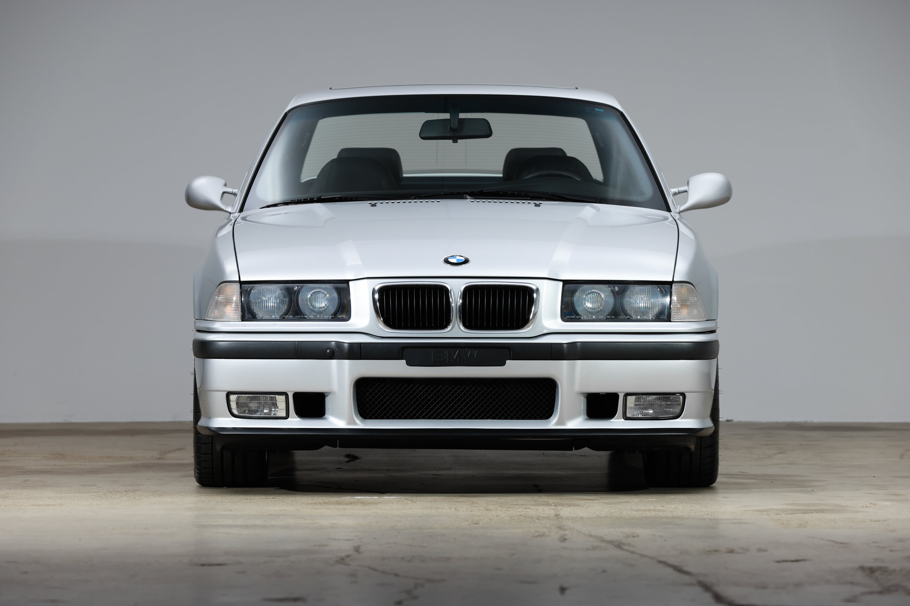
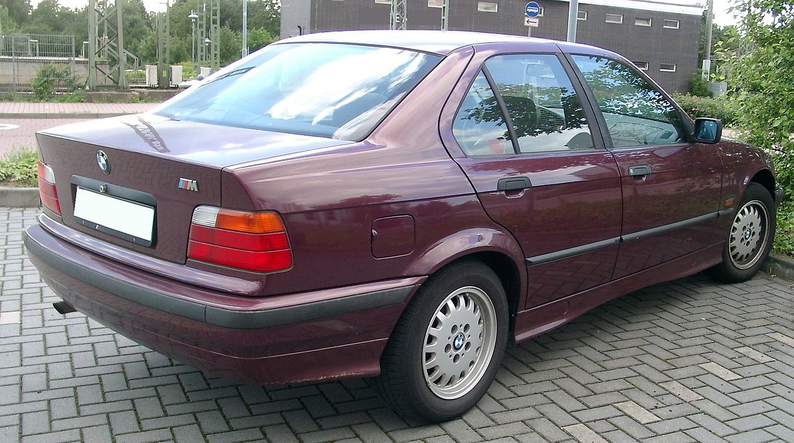
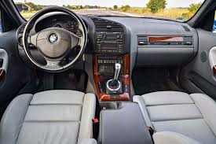

BMW E36
The third-generation 3 Series (1990 - 2000)



Car Specifications
- Engine Options: 1.6L Inline-4, 1.8L Inline-4, 2.0L Inline-6, 2.5L Inline-6, 3.0L Inline-6, 3.2L Inline-6 (M3)
- Power: 100 - 321 hp
- Torque: 150 - 350 Nm
- Transmission: 5-speed manual, 4-speed automatic
- Top Speed: 250 km/h (155 mph)
- 0-100 km/h: 5.5 seconds (M3)
- Fuel Economy: 7.0 - 13.5 L/100 km (40 - 17 mpg)
- Production Years: 1990 - 2000
- Body Style: 2-door Coupe, 4-door Sedan, Convertible, Touring (Wagon), Compact
- Drive Type: Rear-Wheel Drive
- Weight: 1,200 - 1,500 kg
About the BMW E36
The BMW E36 took the 3 Series into a new era with modern styling, improved aerodynamics, and advanced technology. As the first 3 Series to feature a multi-link rear suspension, the E36 provided exceptional handling and ride comfort.
With a variety of body styles and engines, the E36 offered something for every enthusiast, solidifying its status as a versatile and beloved BMW model.
Image Gallery


Key Features
- Performance: Refined engine options and precise handling.
- Design: Sleek, modern styling with enhanced aerodynamics.
- Technology: Advanced features like traction control and multi-link suspension.
Technical Information
The BMW E36 lineup offered a comprehensive range of engines and trims:
Engine Codes and Iterations
- M40: 1.6L-1.8L Inline-4, used in 316i and 318i
- M50: 2.0L-2.5L Inline-6, used in 320i, 325i
- S50: 3.0L-3.2L Inline-6, up to 321 hp, used in the M3
Conclusion
The BMW E36 remains a favorite among car enthusiasts, offering a perfect balance of performance, design, and practicality. Its legacy as a driver's car continues to influence the automotive world.